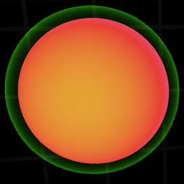
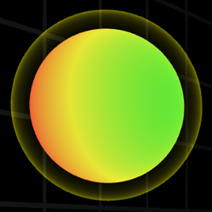
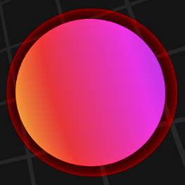

<div fade-in-out id="tutorial">
    <div class="greybox">
        <div id="tutorial-content">
            <p>You are a sphere.</p>

            {{ #if !is_mobile }}
            <p>Fly around by moving your mouse.</p>
            {{ else }}
            <p>Tap and drag to fly around.</p>
            {{ /if }}

            {{ #if !is_mobile }}
            <h2>Controls</h2>

            <p>Stop with <span class="key">S</span>.  Speed boost with
                <span class="key">W</span>{{ #if steering !== "drag" }} or
                left mouse button{{ /if }}, but it will
                cost you some mass.</p>
            {{ /if }}

            <h2>Growing</h2>

            <p>Run into food dots to grow.  Run into smaller players to eat
                them and grow even more.  Fly near larger players to drain some
                of their size.</p>

            
            <p>
                A green border means you can eat this player because you
                are larger.  Try to catch them!
            </p>
            
            <p>
                A yellow border means you can eat this player, but you are
                only slightly larger.  Speed boosting to catch them is
                risky.
            </p>
            
            <p>
                A red border means this player is larger than you, so be
                careful!
            </p>

            <h2>Scoring Points</h2>

            <p>You'll score points any time your sphere grows, but you
                never lose points even if your sphere shrinks.</p>

            <p>Now go eat 'em up!</p>

            <button on-click="@this.fire( ACTIONS.SHOW_PREVIOUS )">Back</button>
        </div>
    </div>
</div>
